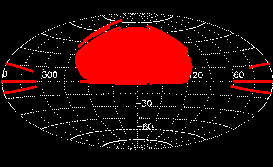
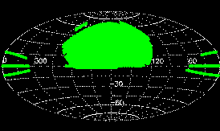
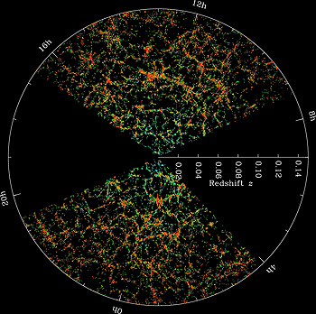

The SDSS Legacy Survey provided a uniform, well-calibrated map in ugriz of more than 7,500 square degrees of the North Galactic Cap, and three stripes in the South Galactic Cap totaling 740 square degrees. The central stripe in the South Galactic Gap, Stripe 82, was scanned multiple times to enable a deep co-addition of the data and to enable discovery of variable objects. Legacy data supported studies ranging from asteroids and nearby stars to the large-scale structure of the universe.
Almost all of these data were obtained in SDSS-I, but a small part of the footprint was finished in SDSS-II. The Legacy Survey's final sky coverage is shown below and given at the DR7 Sky Coverage page.
|
|
| An SDSS mosaic showing the galaxy M51 and its surroundings, combining g, r, and i band images |
The imaging data are available as FITS files for what we call corrected frames (see this general introduction to retrieving FITS files from SDSS). The identification of which files are associated with a given part of the sky is facilitated by the SDSS Glossary for key words like stripe, run, camcol, and field.
All of the imaging data have been processed to yield calibrated astrometric and photometric parameters and classifications. These parameters are available in one or more tables in a database accessible via the Catalog Archive Server (CAS).
Legacy spectra relate to a magnitude-limited sample of galaxies (called Main), a near-volume-limited sample of galaxies called Luminous Red Galaxies (LRG), and a magnitude-limited sample of quasars. For each of these classes, objects are selected from the imaging database for subsequent spectroscopic observation according to criteria we call target selection algorithms. There are almost a million spectra for the two classes of galaxies, and there are more than 120,000 spectra of quasars.
The three classes of objects, plus calibration stars, were observed together and share the same 640-fiber plate. The list of Legacy plates is available on the Legacy chunks page of the Data Archive Server (DAS).
The spectra are available as FITS tables via the Data Archive Server (DAS). Parameters such as redshift, line strength, and velocity dispersion that are derived from the spectra are available via the Catalog Archive Server (CAS).
(Not all of the targets that are candidate quasars actually turn out to be spectroscopically quasars, of course. Thus, the classification derived from the imaging database may differ from the classification derived from the spectroscopic database.)
|
  Region of the sky covered by the SDSS final public data release (DR7), in imaging (top), and spectroscopy (bottom) |

Large scale structure in the northern equatorial slice of the SDSS main galaxy redshift sample. The slice is 2.5 degrees thick, and galaxies are color-coded by luminosity. |
{kind=link}